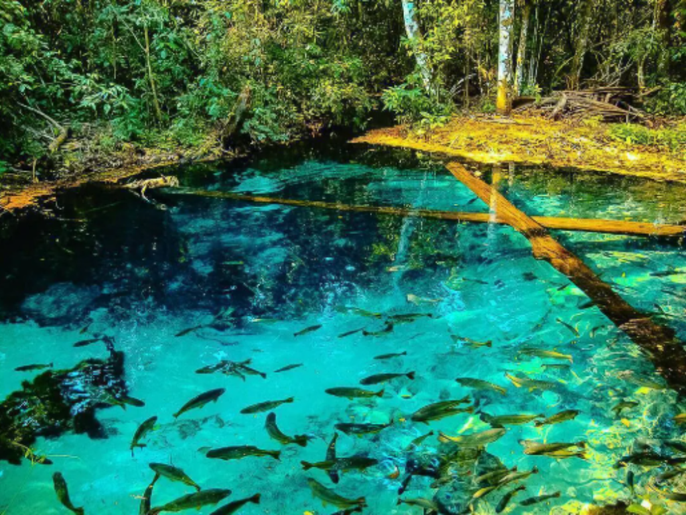

O estado de Mato Grosso está localizado na região Centro-Oeste do Brasil e possui uma das maiores extensões territoriais do país. Sua capital é Cuiabá, conhecida pelo clima quente e pela rica cultura regional. A economia do estado é fortemente baseada na agropecuária, principalmente na produção de soja, milho e algodão. O território mato-grossense abriga importantes áreas naturais, como parte da Floresta Amazônica, do Cerrado e do Pantanal. Além disso, Mato Grosso se destaca pela biodiversidade e pela importância ambiental para o Brasil.

Voltar